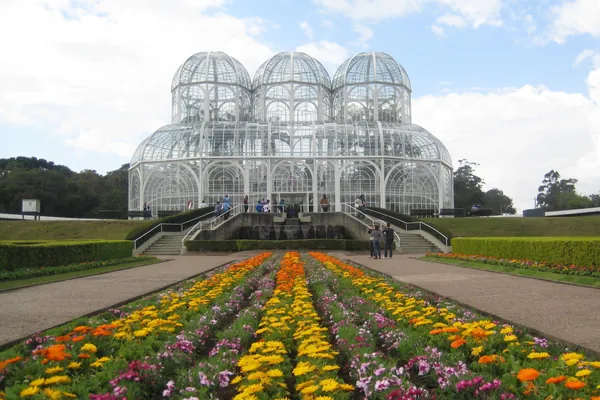

Dados
- Área: 435 km²
- População: 1.773.718
- Estado: Paraná
- País: Brasil
- Idioma: Português
- Moeda: Real (BRL)
- Fuso horário: UTC-3
- Altitude: 934 m
Clima
- Temperatura: 8 °C
- Condições: Parcialmente nublado
- Vento: 12 km/h
- Sensação térmica: N/A
Clima ilustrativo.